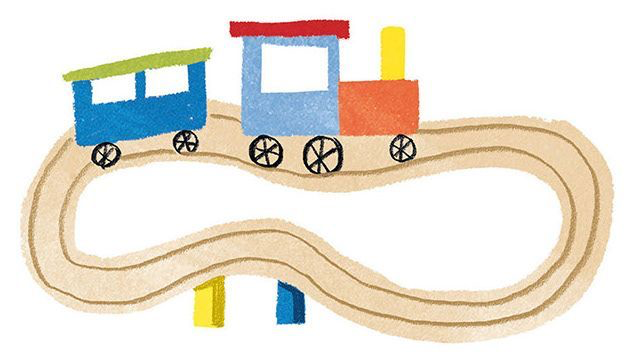

Хочу подарить подарок
Для тех, кто растёт, играет и удивляется · Подборки на 2 и 3 года
ПОДОБРАНО С ЗАБОТОЙ
Подарки на 3 года
Черновик · Вместо фотографий — иллюстрации. Цены демонстрационные, для проверки фильтра. Названия по ссылкам ещё уточняем.
Здесь скоро появятся подарки
Попробуйте возраст 2 или 3 года либо увеличьте бюджет.

Хороший подарок —
начало новой истории
Собираем вещи, с которыми хочется играть,
придумывать и узнавать мир.